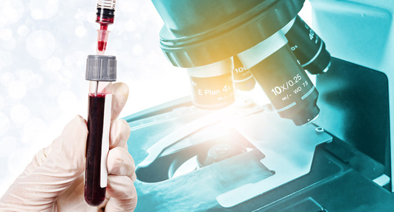
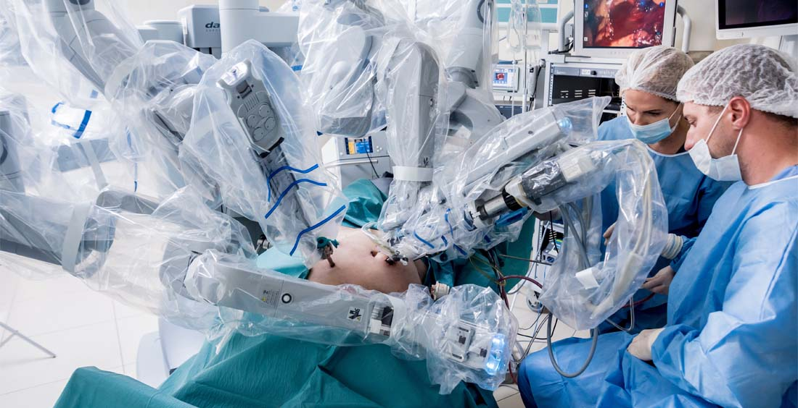
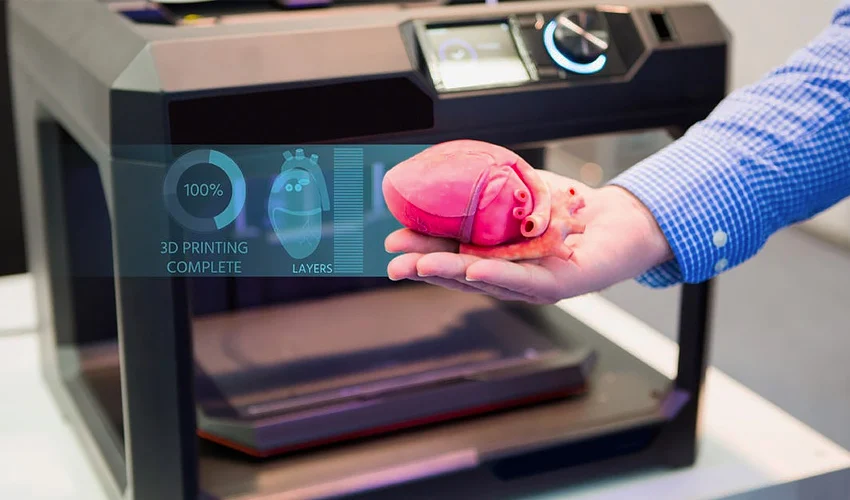

AREA DE LA SALUD
La tecnología en el área de la salud ha transformado significativamente la forma en que se presta atención médica y se manejan los datos de los pacientes. Esta revolución tecnológica abarca una amplia gama de innovaciones que mejoran tanto la eficiencia de los servicios de salud como los resultados para los pacientes. Entre las tecnologías más destacadas se encuentran la telemedicina, los dispositivos portátiles de monitoreo, los sistemas de registro electrónico de salud (EHR), la inteligencia artificial (IA) y la robótica.
Biopsia líquida
Una prueba mínimamente invasiva que se realiza en una muestra de sangre para identificar células cancerosas tumorales o ADN de células tumorales que están circulando en la sangre. Puede ser útil para diagnosticar un cáncer en fase temprana y para planificar el tratamiento en función del tipo de tumor, determinar su eficacia y detectar una recaída. Se trata de un procedimiento sencillo, que evita trastornos al paciente y que representa un ahorro de tiempo. La técnica todavía no es definitiva en la detección precoz del cáncer, por lo que no sustituye a otros métodos de diagnóstico temprano sino que es complementaria a ellos. Entre los retos figura averiguar qué tipo de tumores se benefician más de aplicarla y con qué frecuencia se deberían hacer los análisis.
Telemedicina
La telemedicina permite a los profesionales de la salud atender a los pacientes de forma remota, utilizando plataformas de videoconferencia y herramientas de comunicación en línea. Esto no solo facilita el acceso a la atención médica en áreas rurales o desatendidas, sino que también reduce la necesidad de visitas físicas, ahorrando tiempo y recursos.
Dispositivos portátiles de monitoreo
Los dispositivos como relojes inteligentes y monitores de actividad física permiten a los pacientes rastrear sus signos vitales y otros indicadores de salud en tiempo real. Estos dispositivos pueden alertar a los usuarios y a sus médicos sobre posibles problemas de salud antes de que se conviertan en emergencias.
Robótica
Los robots se emplean en cirugías para mejorar la precisión y reducir la invasividad, así como en la rehabilitación de pacientes y el manejo de tareas rutinarias en hospitales, liberando tiempo para que el personal de salud se concentre en la atención directa al paciente.
I.A y Machine learning
Utilizados para analizar grandes cantidades de datos médicos y mejorar el diagnóstico de enfermedades mediante la identificación de patrones que podrían pasar desapercibidos para los médicos. Algoritmos de IA ayudan en la creación de planes de tratamiento personalizados y en la detección temprana de enfermedades como el cáncer.
Impresion 3D
Utilizada para crear prótesis personalizadas, implantes y modelos anatómicos precisos para la planificación quirúrgica. Desarrollo de tejidos y órganos artificiales para trasplantes.
